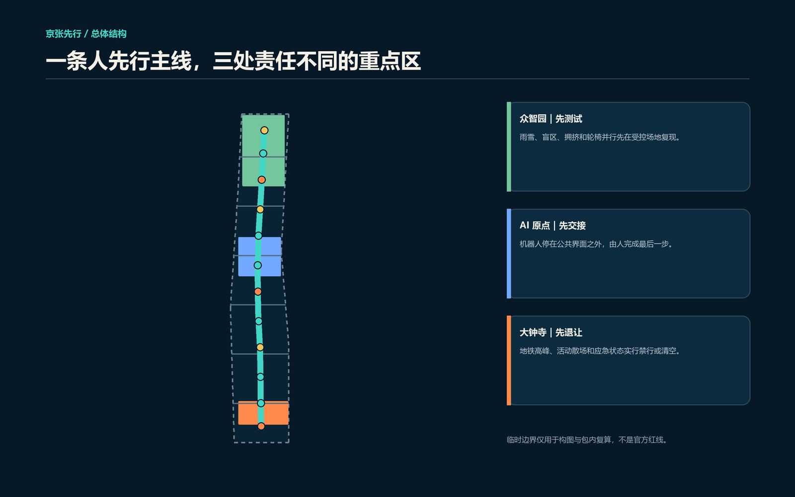
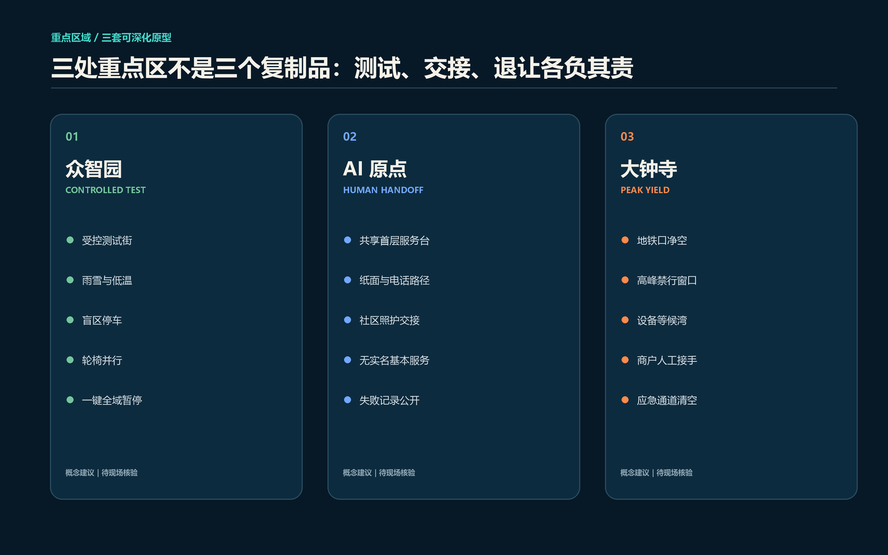
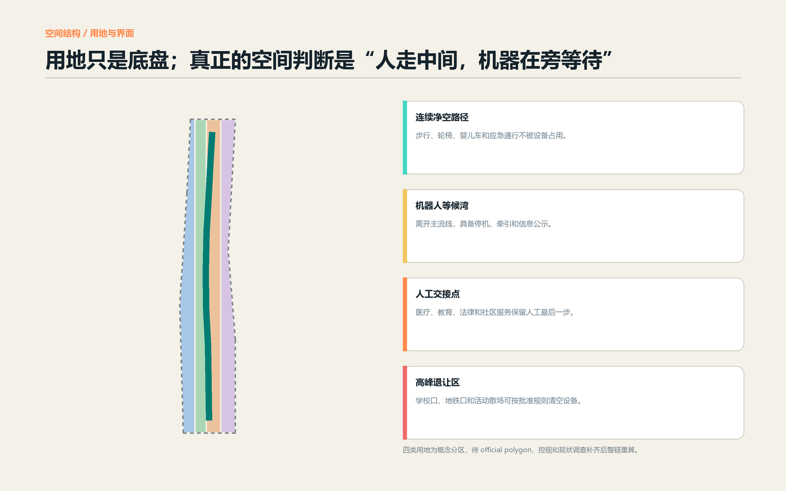
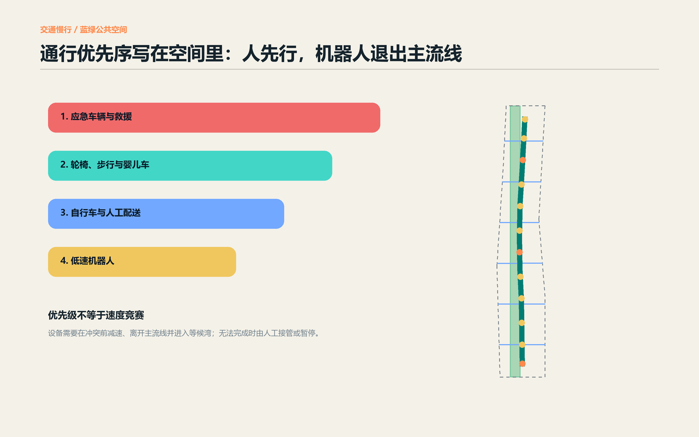
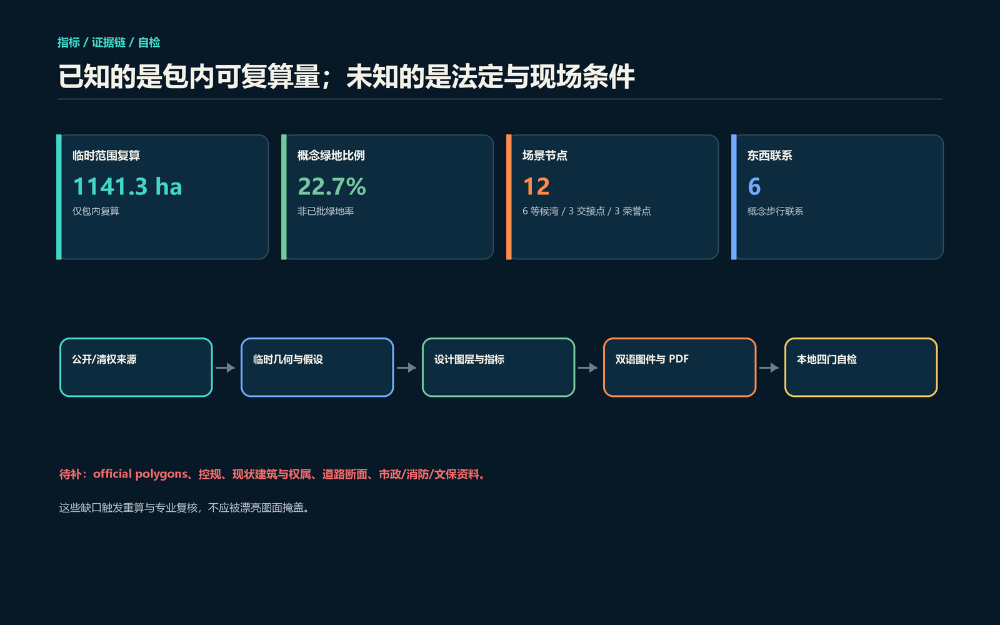

人走中间，机器在旁等待；机器无法让行时，由人接手或暂停。

43.6 km²
统筹研究：责任与生态回路
≈11.4 km²
总体设计：人先行主线与公共界面
≈368.4 ha
重点区域：测试、交接、退让
Geometry role: provisional_constraint. Official boundary: false.

雨雪、盲区、拥挤与轮椅并行。
机器停在界面外，人完成最后一步。
高峰、散场和应急状态清空设备。

科研测试、公园绿地、人工交接与商业服务、社区基本服务完整覆盖临时边界。六处概念建筑基底仅测试工作链容量，不代表现状或已批规模。
现状与权属调查 → 价值/结构/碳评估 → 公众与产权主体意见 → 保留优先 → 依法决定。

概念优先序：应急与救援，轮椅/步行/婴儿车，自行车与人工配送，低速机器人。该顺序是设计原则，不替代交通法规或审批。
| ID | 场景 | 共同底线 |
|---|---|---|
| TVS-01 | 雨雪低温配送 | 人工复核、无持续轨迹、可暂停、保留人工路径 |
| TVS-02 | 轮椅并行与盲区 | 人工复核、无持续轨迹、可暂停、保留人工路径 |
| TVS-03 | 车队排队与应急清空 | 人工复核、无持续轨迹、可暂停、保留人工路径 |
| S-04—S-12 | 人工交接、无障碍导航、公共服务、维护与文化 | 人工复核、无持续轨迹、可暂停、保留人工路径 |

命名与 VI、三区两翼、六案例、七画像、十二场景与三项产业测试。
十二公共节点、三朝圣地标、京张让行叙事、People First Week 与长期公开账本。
页面显示目标状态；最终结果以 self_check_submission.py 输出为准。
official polygons、控规、现状建筑与权属、道路断面、客流、市政、消防和文保资料待补。等候湾、禁行时段和交接点不是已批准许可。
Full provenance, allowed uses and limitations: sources.json. Complete assumptions: assumptions.json.